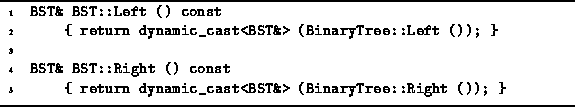

Data Structures and Algorithms
with Object-Oriented Design Patterns in C++
Data Structures and Algorithms
with Object-Oriented Design Patterns in C++The BST class inherits the three member variables key, left, and right for the BinaryTree class. All three of them are pointers. The first is a pointer to an Object instance, and the latter two are pointers to BinaryTree instances. All three pointers are zero if the node represents the empty tree. Otherwise, the tree must have a root and two subtrees. Therefore, all three pointers are non-zero in an internal node.
Program  defines the two member functions Left
and Right which return the left and right subtrees,
respectively, of a given binary search tree.
Since the implementation extends the BinaryTree class,
the left and right member variables are declared as pointers
to BinaryTrees.
However, in a binary search tree,
the subtrees will be instances of the BST class.
Therefore, these functions make use of the dynamiccast
operator to return a reference of the correct type.
defines the two member functions Left
and Right which return the left and right subtrees,
respectively, of a given binary search tree.
Since the implementation extends the BinaryTree class,
the left and right member variables are declared as pointers
to BinaryTrees.
However, in a binary search tree,
the subtrees will be instances of the BST class.
Therefore, these functions make use of the dynamiccast
operator to return a reference of the correct type.

Program: BST Class Left and Right Member Function Definitions
 Copyright © 1997 by Bruno R. Preiss, P.Eng. All rights reserved.
Copyright © 1997 by Bruno R. Preiss, P.Eng. All rights reserved.